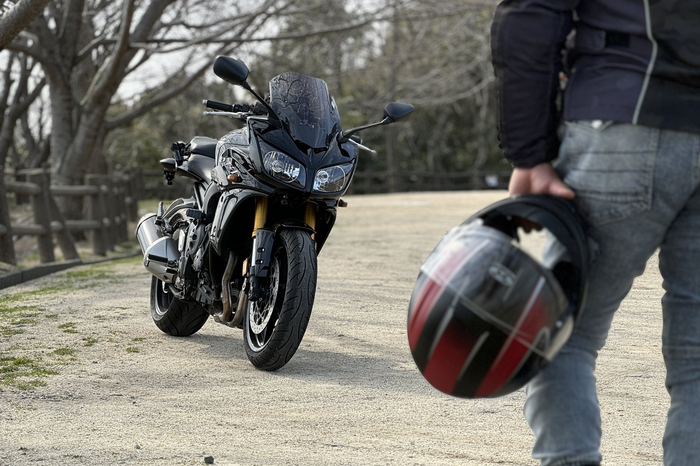
TOURING
愛車とふたりで、瀬戸内をぐるり
天気のいい日は、ヘルメットを片手に外へ。海沿いの道を走って、気に入った場所でエンジンを止めて、 ぼんやり海を眺める。それだけで一日が満ちてしまいます。
赤黒のヘルメットに黒い大型バイク。走っているのを見かけたら、たぶんロイです。
バイクにまたがって瀬戸内をぐるり。コートでバウンドテニス。
そして、シニアのみなさんのスマホとパソコンのお手伝い。
ロイのぜんぶが、ここに集まっています。
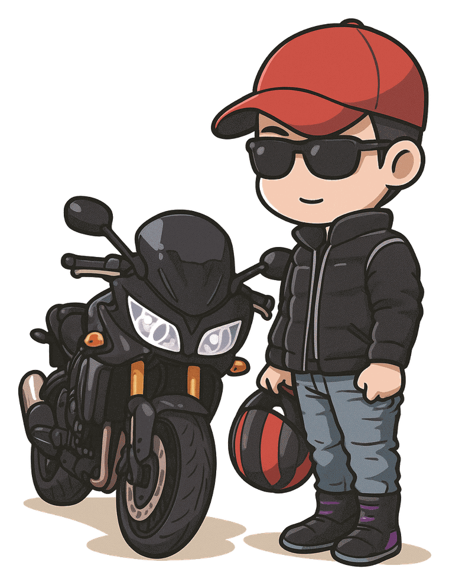
肩書きはひとつに決めていません。どれも本気で、どれも楽しんでいます。
「シニアのみなさんの毎日を、もっとラクに、もっと楽しく」がテーマの姉妹サイトです。
電源の入れ方から、写真の送り方、LINE の使い方まで。
「今さら聞けない」を、やさしい言葉と大きな文字でまるごと解説しています。
無料で使える脳トレアプリもご用意しました。
電源の入れ方から順番に。動画とテキストで、迷わず進められます。
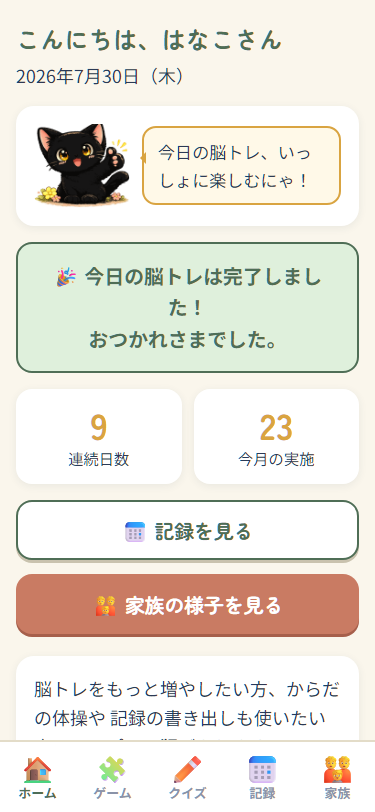
毎日5分の脳トレと記録がひとつに。登録もインストールも不要です。
いまあるものを使って、小さく始めて、長く続ける。全7回の動画講座です。
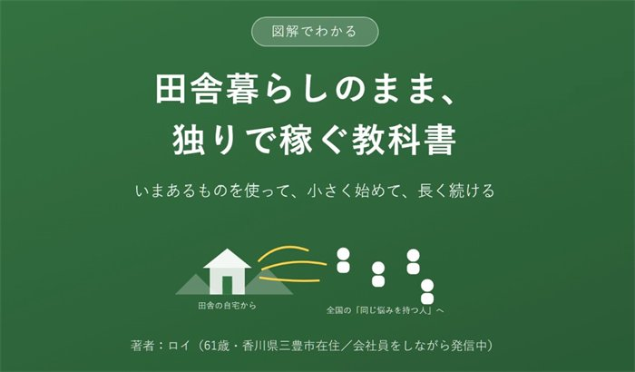
全7回・無料この講座が見られた回数 今日 —回／のべ —回
田舎にいながら、自分の得意を売り物に変えるまでの道のりを解説します。 特別な機材やスキルはいりません。フルテロップの字幕つきなので、 音を出せない場所でもご覧いただけます。
目次（全7回）
いまは無料で公開中です
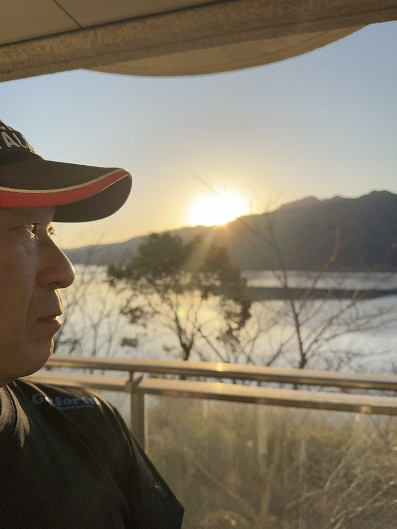
香川県三豊市在住
瀬戸内海と、うどんと、田んぼに囲まれた町で暮らしています。 もともと機械いじりが好きで、気がつけばパソコンもスマホも「まず自分で試してみる」のがくせになりました。
そのうちに、同じ世代の友人から「これどうやるん？」と聞かれることが増えました。 そこで始めたのが YouTube と note、そして ITシニアなんでも相談室 です。 むずかしい言葉は使いません。実際に使ってわかったことだけをお伝えしています。
むずかしいことを、むずかしいまま伝えない。
これがロイの、たったひとつのルールです。
仕事じゃないほうの話も、少しだけ。

天気のいい日は、ヘルメットを片手に外へ。海沿いの道を走って、気に入った場所でエンジンを止めて、 ぼんやり海を眺める。それだけで一日が満ちてしまいます。
赤黒のヘルメットに黒い大型バイク。走っているのを見かけたら、たぶんロイです。
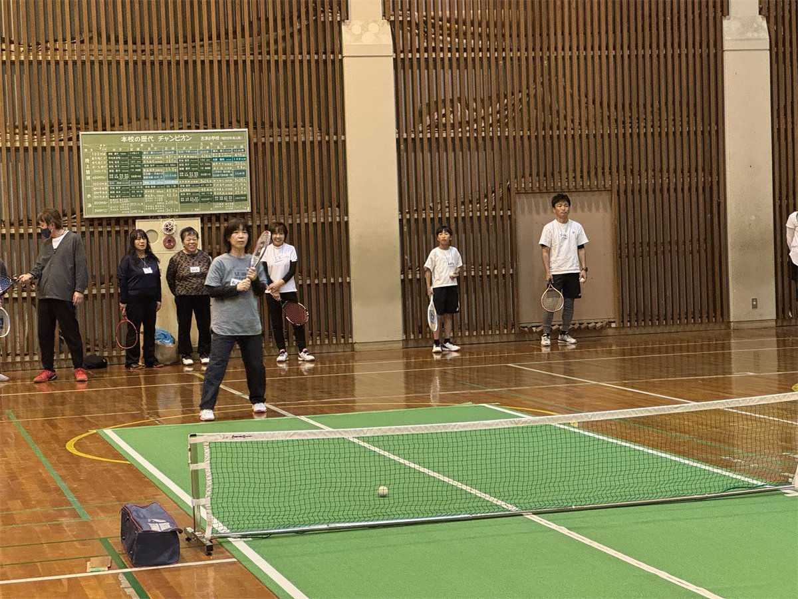
体育館の中で、小さなコートとやわらかいボールで楽しむ競技です。 激しく走り回らなくていいので、シニアの方でも無理なく続けられます。
香川県バウンドテニス協会・三豊市スポーツ協会で、大会の運営や対戦表づくりを担当しています。 「さぬきうどん杯」もそのひとつです。

ロイのサイト・アプリ・教材のあちこちに出てくる、まんまるな目の黒猫です。 脳トレアプリ「脳いきいき手帳」では、案内役をつとめてくれています。
場面に合わせて、あいさつしたり、見送ったり、ひと休みしたり。

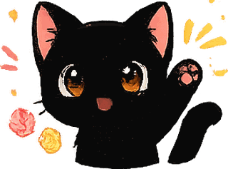

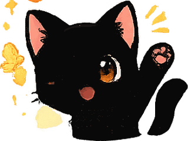
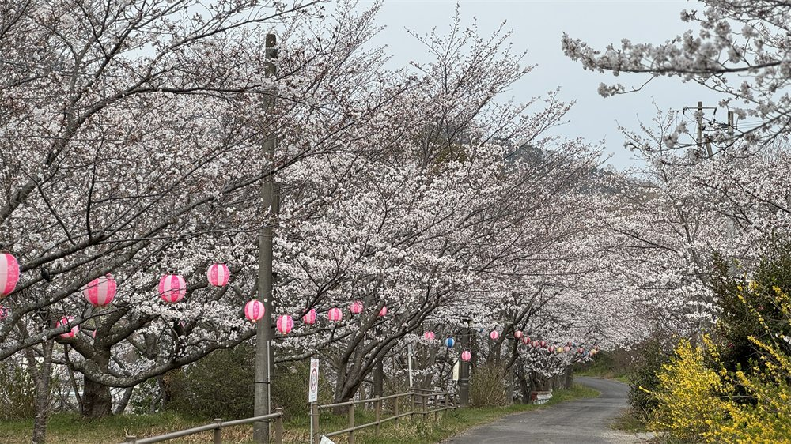
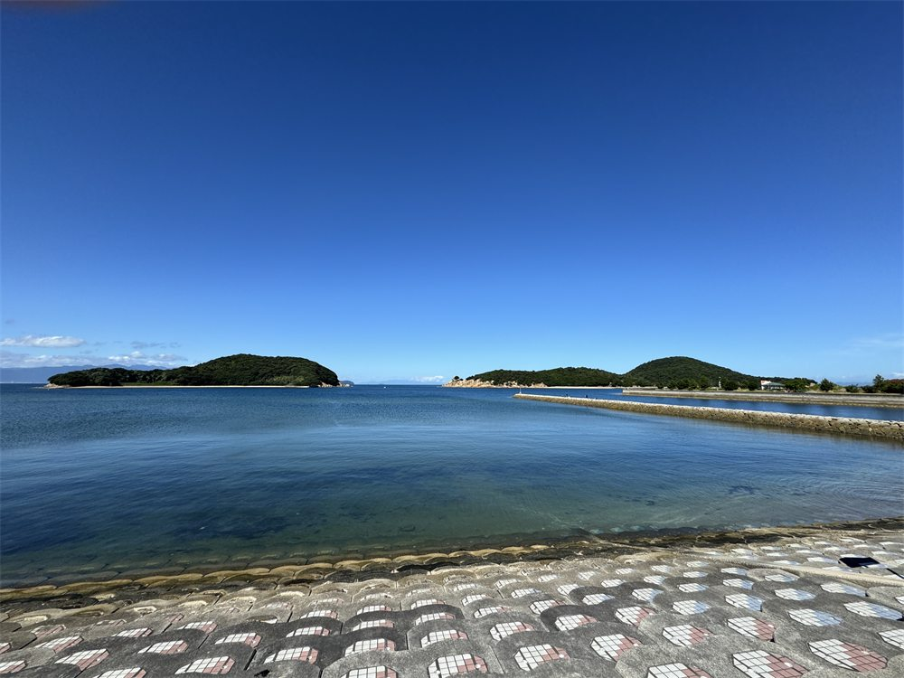
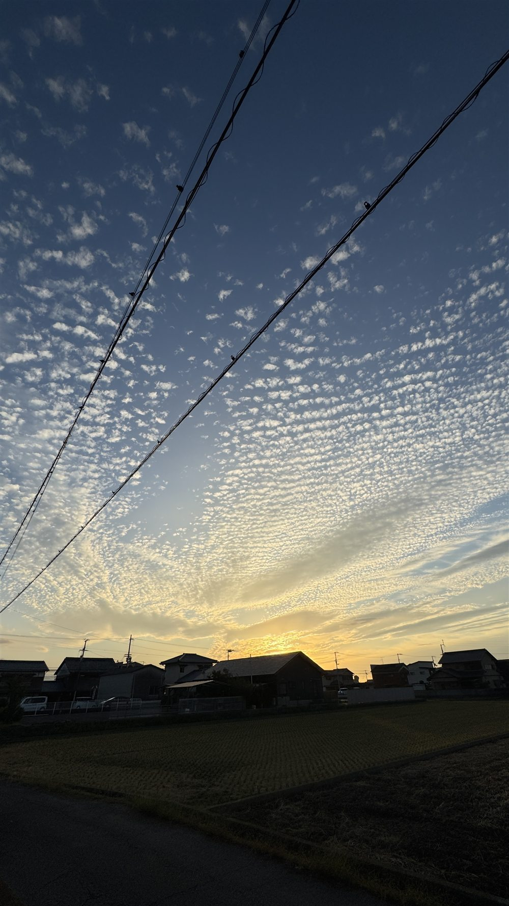
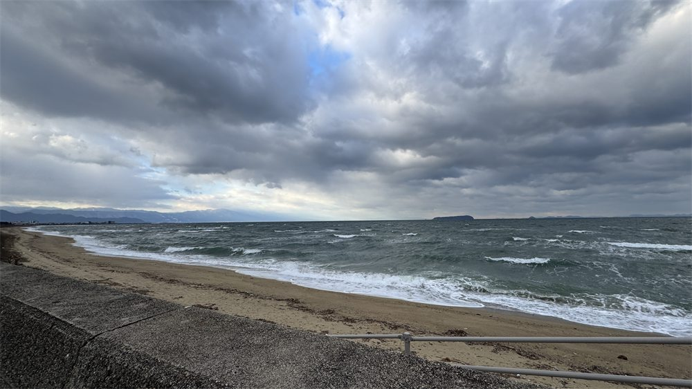
春は提灯のならぶ桜並木、夏は松林ごしの瀬戸内海。 秋はうろこ雲の夕焼け、冬は波の荒い海岸。 派手さはないけれど、季節がていねいに巡っていく町です。
「田舎にいながら発信する」——それができる時代になったことを、いちばん実感しています。
気になるほうから、のぞいてみてください。